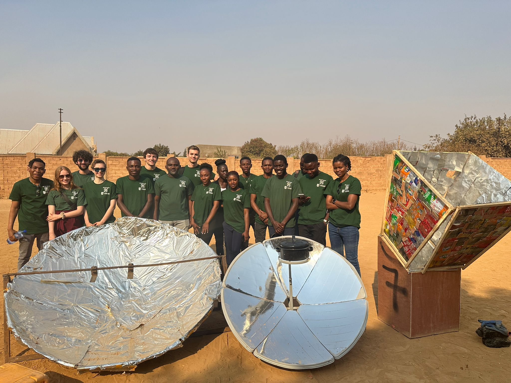
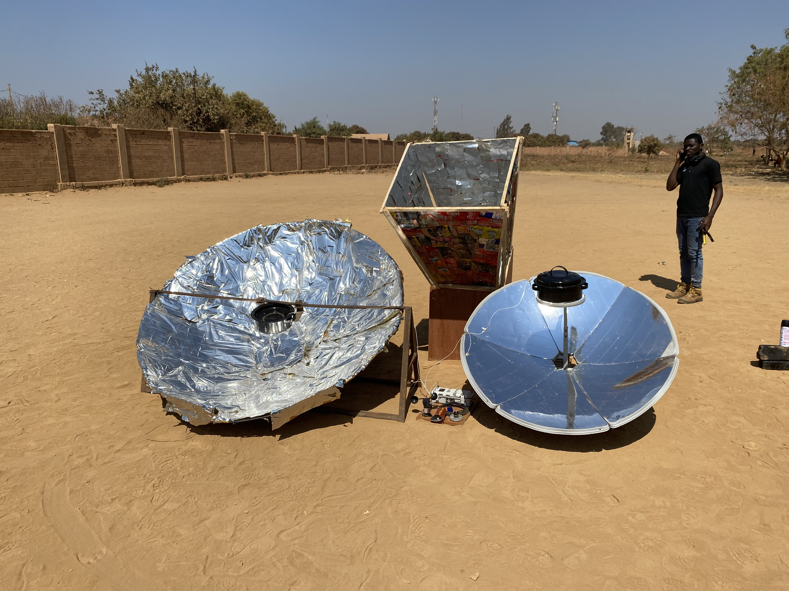
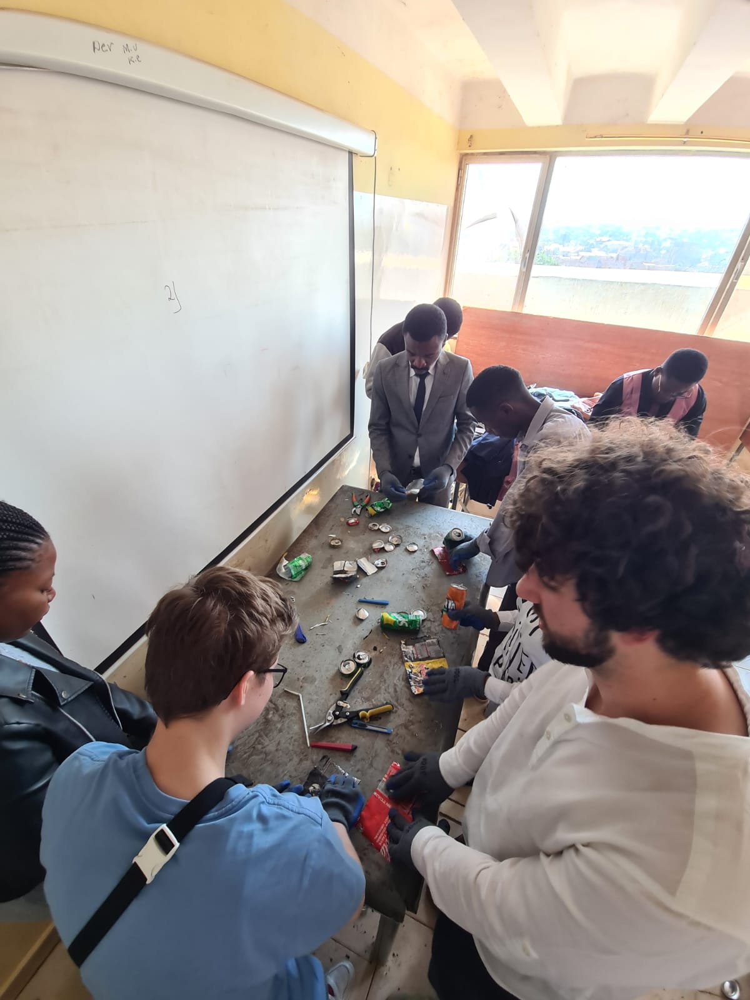
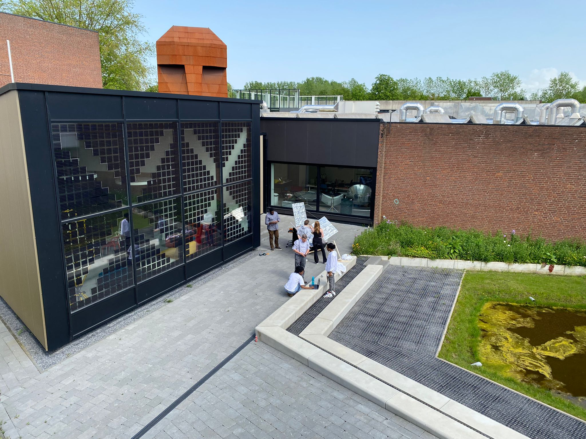
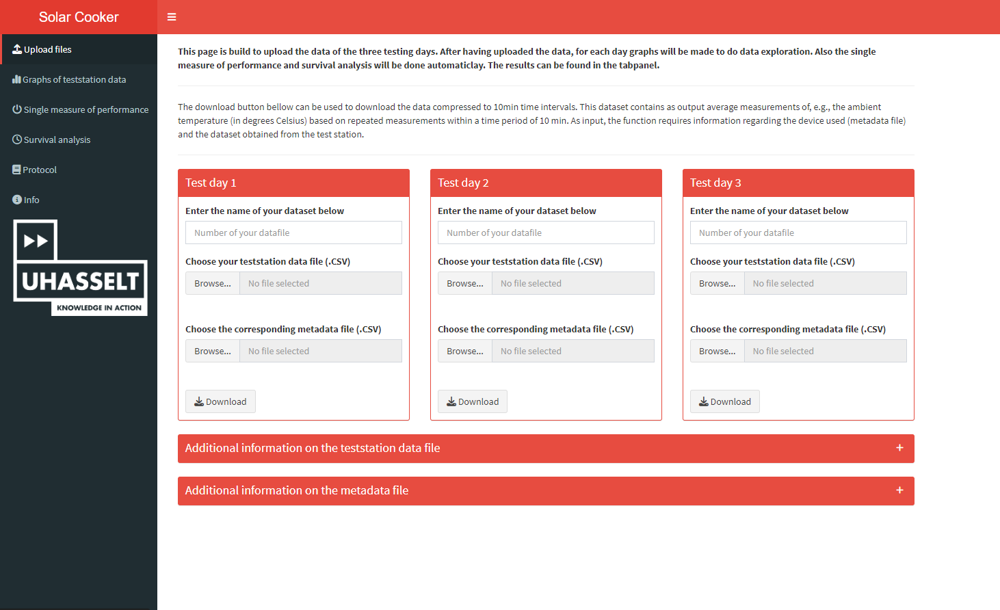
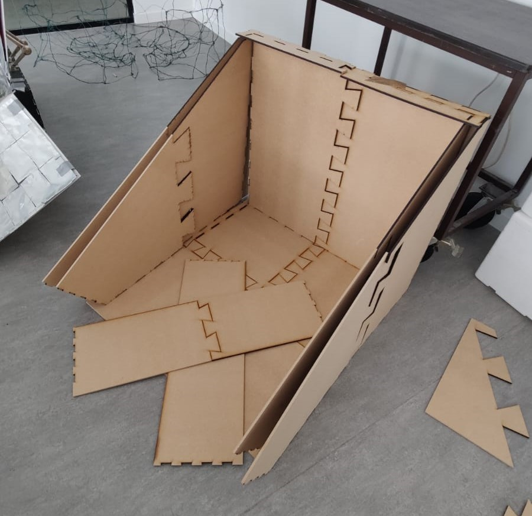
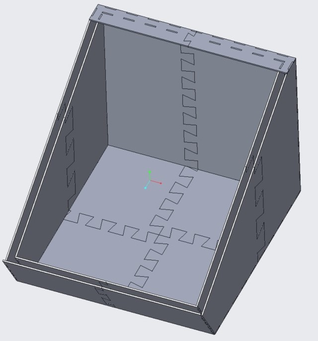

S4all-team Hasselt University and Université de Lubumbashi!
July 5, 2024

-
Testing with the new box prototype at the Université de Lubumbashi.July 8, 2024
-
Building a new box prototype at Université de Lubumbashi!July 3, 2024
-
Testings with box/parabola prototype!April 29, 2024
-
Prototype 6 is finished!April 29, 2024

-
First version of the statistical shiny app has been launched!March 31, 2024
-
Started building the box of the prototype!March 28, 2024
-
Final design of the new box prototype is ready!March 19, 2024
-
Start solar cooker project 2024February 13, 2024